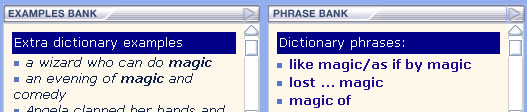

The phrase bank works in conjunction with the Longman examples bank. It helps you to see how words are commonly used in phrases.
Open an entry in the dictionary such as 'magic'. The phrase bank will show you all the phrases containing the word 'magic', such as magic circle, magic moment, magic word. Click once on any of these phrases and examples containing the phrase will appear in the examples window.

The phrase bank also shows you words that are commonly used with the word you are studying. In the illustration below you can see that the preposition like is used with diamond. Click on like to show examples of this usage.